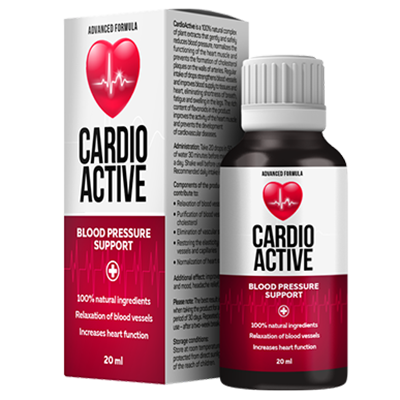

HIPERTENSIUNEA ARTERIALĂ ȘI MEDICAMENTELE SCUMPE PENTRU TENSIUNEA ARTERIALĂ SUNT UN LUCRU DIN TRECUT!
Infarctul și accidentul vascular cerebral sunt cauza a aproape 70% din toate decesele din lume. Șapte din zece persoane mor din cauza blocajelor din arterele inimii sau ale creierului. În aproape toate cazurile, motivul unui astfel de final teribil este același - creșteri de tensiune datorate hipertensiunii. „Ucigaş tăcut” ca hipertensiunea numit de cardiologi, duc viața a milioane de oameni în fiecare an.
Bradu Simion Mihai
Cardiolog, om de știință,
candidat la științe medicale, profesor, academician. Are experiență de
muncă și stagii la universități din diferite țări. Apartenență la
asociații profesionale de cardiologie: New York Academia Medicală,
Societatea pentru Chirurgie Cardiovasculară, Societatea pentru Chirurgie
Vasculară și Societatea Europeană pentru Chirurgie Cardiovasculară.
Experiență profesională - 22 de ani.
Despre problemă:
Nu este un secret faptul că bolile cardiovasculare sunt liderii mondiali printre bolile care revendică vieți umane. De exemplu, hipertensiunea arterială pare a fi cauza principală a atacurilor de cord și a accidentelor vasculare cerebrale, care sunt înregistrate în registrul cardiovascular. Desigur, şi alte boli afectează organismul, dar hipertensiunea și căderile de tensiune sunt cele care apasă declanșatorul, trimiţând o persoană pe altă lume.
Dacă vorbim în cifre, atunci aproximativ 77-78% din decesele în cazurile „naturale” sunt rezultatul hipertensiunii. În termeni absoluți, aceasta reprezintă aproximativ 1,54 milioane de decese în 2015 și 1,49 milioane în 2014. Aceasta înseamnă că numărul este cu adevărat imens și înfricoșător. Până de curând, nimeni nu știa despre amploarea acestei catastrofe, deoarece nu au fost efectuate statistici și analize detaliate. Din 2011 până în 2015, am colectat o cantitate imensă de date, ceea ce a dus la concluzii foarte dezamăgitoare.
Creșterile de tensiune de fiecare dată provoacă o suprasolicitare imensă a mușchiului cardiac, care mai devreme sau mai târziu va duce la insuficiență cardiacă. Aproximativ vorbind, de fiecare dată când crește tensiunea, suprasolicită inima de 10-20 de ori. Dacă vorbim despre dezvoltarea finală a bolii, tensiunea arterială duce întotdeauna la același rezultat - moartea. Apropo, dacă îl identificați ca fiind principala cauză a decesului, atunci apare în 89% din cazuri. Adică, în 89% din cazuri, hipertensiunea se termină cu infarct, accident vascular cerebral și moarte. Mai mult, dacă acum 20-30 de ani, pacienții cu acest diagnostic au avut o bună ocazie de a trăi 10-20 de ani, acum aproximativ 2/3 (două treimi) dintre pacienți mor în primii cinci ani după boală.
Mai ales înfricoșător este faptul că mulți oameni nu își dau seama că au hipertensiune. Și pierd oportunitatea de a schimba ceva, sunt pur și simplu condamnați.
Aceste simptome pot indica faptul că aveți hipertensiune arterială:
- Durere de cap
- Bătăi rapide ale inimii
- Puncte negre în fața ochilor (muşte)
- Apatie, iritabilitate, somnolență
- Vedere neclară
- Transpiraţie
- Oboseala cronica
- Umflarea feței
- Amorțeala degetelor și frisoane
- Valuri de presiune
Chiar și unul dintre aceste simptome ar trebui să te facă să gândești. Și dacă există două dintre ele, nu există nicio îndoială că aveți simptome de hipertensiune. Apropo, conform statisticilor 67% dintre toți pacienții cu hipertensiune nu știu că sunt bolnavi.
Cum să te protejezi și să învingi boala?
În primul rând, trebuie să înțelegeți că trebuie să renunțați la multe obiceiuri proaste, în special fumatul și alcoolul. Acest lucru nu face decât să agraveze situația tensiunii arteriale. Următorul fapt este că este necesar să scadeţi tensiunea, altfel nu există nicio șansă de recuperare. Dar vestea proastă este că, chiar dacă vă eliberați tensiunea arterială, nu va vindeca boala în sine. Mai mult, dacă luați medicamente și aveți o scădere bruscă a tensiunii arteriale, acest lucru poate provoca o reacție extrem de negativă în organism, precum și duce la un atac de cord. Ca să nu mai vorbim de faptul că toate pastilele sunt foarte grele pentru ficat.

De fapt, în acest moment, singurul supliment recomandat oficial pentru tratamentul hipertensiunii arteriale și utilizat de cardiologi în activitatea lor este Dezvoltarea produsului a început în urmă cu câțiva ani și a avut un succes foarte rapid. Aditivul a fost dezvoltat de o echipă de specialiști care a lucrat îndeaproape cu cardiologii practicanți. Rezultatul este un remediu unic care, spre deosebire de toate celelalte medicamente, tratează în mod fiabil hipertensiunea și elimină cauza acesteia.
Experții au descoperit că suplimentul acționează asupra cauzei bolii, astfel încât să puteți scăpa complet de hipertensiune arterială. Simptomele dispar în primele șase ore după administrare, datorită componenţei sale active. Acest lucru dă posibilitatea, imediat după începerea cursului, să respirați adânc cu un piept plin.
Tonul vascular este complet restabilit după un curs de tratament. În aşa fel, este eficient în toate etapele hipertensiunii arteriale. Suplimentul, desigur, a trecut studiile clinice. Aș dori să menționez că în timpul procesului de testare, a demonstrat o eficacitate mai bună, decât remediile străine. Cel mai bun rezultat al produselor occidentale este de 20-21% de persoane vindecate. În cazul , vorbim despre 75-77% de persoane vindecate. În restul 33% din cazuri, starea s-a stabilizat. Tensiunea arterială nu saltă și vă simțiţi bine.
În prezent, remediul original poate fi comandat completând formularul oficial de comandă de mai jos.

L-am cumpărat pentru bunica mea - are întotdeauna probleme cu tensiunea arterială. Este puțin probabil ca ea însăși să facă o comandă online sau chiar prin telefon. Și am decis să comand pentru ea. A ajutat, aș spune, 100%, deși problemele erau de lungă durată și globale - timp de câțiva ani a consumat medicamente foarte puternice. Dar acum totul este în regulă! Mulțumesc!


Mă simt mult mai bine după cursul tratamentului , de parcă aș fi întinerit. Chiar și înfățișarea mea s-a schimbat. Am devenit mai tânără și mai sănătoasă.

E un miracol! Am comandat imediat ce am aflat de el. Păcat că nu știam despre el acum 5 ani, am suferit foarte mult de tensiune, dar acum sunt în viață și bine! Parcă m-aș fi născut din nou! Mulțumesc foarte mult.

Am auzit prima dată despre supliment acum vreo trei luni și l-am comandat imediat. Problemele de tensiune au fost grave. Dar după prima zi de administrare, tensiunea arterială nu a crescut niciodată. Mă bucur de viață.